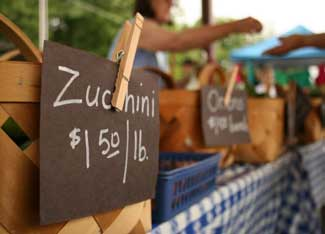

Looking for food that’s fresh, local and sustainably produced? For many of us, that food can be found nearby at the very farm from which it originates.
Recent news about the side effects from artificial colorings and preservatives, the decline of nutrients in mass-produced food, and the unappetizing practices of industrial beef production have made the choice crystal clear: Bypass all of that and buy as much food as feasible from local farmers you can get to know and trust. You can go straight to the source and purchase food from a farmer, shop at a farmers market or join a CSA (community supported agriculture). With the latter, a “subscription” will buy you a season’s worth of foods from a coalition of farmers in your area.
These days, it’s surprisingly easy to locate your local dairy, grass-fed beef producer or vegetable farmer thanks to these handy Web sites:
Food Routes. This site features not only the “hows” of buying local, but also the “whys.” Food Routes is a nonprofit organization on a mission to close the distance between people and their food. The organization has even inspired a group of “Buy Fresh Buy Local” chapters across the country. Check to see if there’s one near you, or start your own!
LocalHarvest. Enter your Zip, city or state to find a farmer near you - it’s that easy. You can even search for specific foods: Looking for organic apples? How about the rich taste of a free-range turkey for a family gathering? LocalHarvest’s extensive database will show you where to find them. Wondering when and where the local farmers market meets? Look no further. Here you can find a CSA, or even a list of restaurants that serve fresh, local food.
Eatwild. This is your one-stop shop for information about and suppliers of grass-fed meats. Many studies show that grass-fed operations produce more nutritious meat with extra vitamins and omega-3s, are easier on the environment thanks to the absence of feedlots, and promote more humane living conditions for the animals themselves.
Once you’ve found a list of potential farms, don’t be shy. Call and schedule an appointment to take a look around - most farmers will be thrilled to give you a VIP tour of their establishment. And if not, don’t sweat it, you don’t want food from a place that doesn’t offer full disclosure, anyway.
|
 ISOTCKPHOTO/ALISON STIEGLITZ Delicious, farm-fresh food is available, you just have to know where to find it. |
|
|